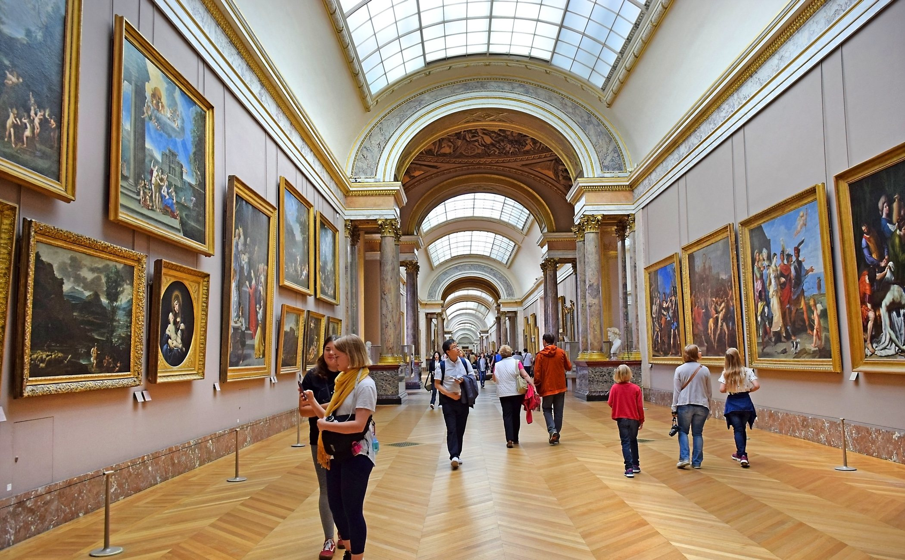

El arte vive en todas partes, ¿lo vemos?
¿Qué tipo de arte es el que te gusta más y por qué?

El arte lo vemos y admiramos en las calles, en los museos, en las escuelas, en nuestros libros y
nuestras clases de español en primaria, secundaria y preparatoria. Desde niños nos enseñan que
la creatividad es parte del arte, que los artistas se dejan llevar por sus ideas, emociones y
sentimientos para crear objetos o movimientos que se vuelven magníficos ejemplos de arte en el
mundo.
Es importante recordar que el arte no es solo pintura, escultura, ópera y pluma, es también
baile, sonidos, ritmos, monumentos, movimientos y todo lo que pueda convertirse en expresión de
sentimientos puros e increíbles para los seres humanos. En consecuencia, el cuerpo del ser
humano también pudiéramos considerarlo un arte, por lo complicado y difícil que es comprenderlo,
inclusive para personas más preparadas e inteligentes.
EL arte en los Museos
Importancia de los museos

Existen muchos preconceptos sobre la definición de museo que muchas veces no tienen que ver con
la realidad. La definición y la forma de entender los museos ha ido evolucionando a lo largo de
la historia. La palabra viene del griego, y significa lugar donde habitan las musas. Hoy en día,
seguimos relacionando el concepto de arte con las musas, seguimos pensando que los artisitas
tienen un aura espiritual
Para los romanos tiene que ver más con la creatividad, el lugar donde se enseñaba filosofía. No
olvidemos que para esta cultura la filosofía era la ciencia de todas las ciencias, la más
importante.
Pero, gracias a la Revolucion Francesa y su ideario, esto cambia. Este movimiento promulga que
aquello privado se convierta en público y poco a poco se vuelve a esa idea romana del museo como
lugar para aprender. Uno se puede culturizar a través de las obras, aprender sobre la historia,
la filosofía, la naturaleza…
De todas formas, creo que cada vez esto va a menos. La idea de museo se replantea con la entrada
de nuevo público, entran al museo nuevas formas de percibir, mirar y sentir, y los museos se
adaptan a ello. Así, el conocimiento que albergan y la forma de exponerlo se hace más rico y los
conocimientos se entraman, convirtiéndose en un lugar más social. La idea del museo como lugar
sagrado, en el que no se come, no se toca y no se respira va desapareciendo.
En el Centro Contemporáneo de Huarte me llamó positivamente la atención el cartel que vemos a la
izquierda. Es un símbolo de esa apertura del museo, de esa mayor cercanía a la sociedad.
El arte en la musica
La poesia Musical

La poesía nació unida con la música, y es que si nos remontamos a la antigua Grecia podemos ver
cuáles fueron los inicios del género literario y como ese siempre ha estado ligado a la música,
el lirismo y el sonido.
El concepto de música ha ido evolucionando desde su origen en la antigua Grecia, en que se
reunía sin distinción a la poesía, la música y la danza como arte unitario.
Desde hace varias décadas se ha vuelto más compleja la definición que hoy en día propone que es
una de las expresiones más fabulosas del ser humano que logra transmitir de manera inmediata
diferentes sensaciones que otras formas de arte quizás no pueden.
La música es un complejo sistema de sonidos, melodías y ritmos que el hombre ha ido descubriendo
y elaborando para obtener una infinidad de posibilidades diferentes.
En la actualidad la música ha cobrado cierta importancia para el ser humano, y es que la música
ha funcionado como medio de expresión al igual que la poesía.
La música permite canalizar los sentimientos y hacer que la persona aliviane sus penas o haga
crecer su alegría dependiendo del caso.
Pero, ¿Qué pasaría si juntamos el poder de la música con la magia de la poesía? Sencillamente
entrenamos composiciones maravillosas.
Disfrutas de los poemas de música más interesantes y cautivadores que puedes encontrar, además
en ellos los autores han plasmado sus más profundos sentimientos acompañados de la dulce
musicalidad.
El arte en la lectura
literario

La lectura es un arte y una disciplina que al realizarse cotidianamente hace al ser humano un
individuo con un mundo tremendamente profundo y capaz de situarse en las mejores condiciones
posibles en cualquier situación que se le presente debido al devenir de este mundo cambiante
porque se mueve de acuerdo a la preparación que haga al hombre para comprender mejor las
realidades en donde vivimos. Lo que es lo mismo la cultura juega un papel preponderante en esta
circunstancia, por eso la palabra esta imbuida en el lenguaje y el lenguaje es una herramienta
para adquirir conocimientos y sabidurías, por lo tanto la lectura es la piedra angular del
aspecto cognoscente del ser humano y su nivel intelectual.
Ya lo decían los grandes pensadores que se conoce la historia y sus hechos gracias al vehículo
representado por el lenguaje, por eso la importancia de la lectura. Pero para comprender mejor
las cosas es fundamental leer entre líneas, conocer los intríngulis del texto, ubicar los
sinónimos y antónimos, las raíces de las palabras, conocer cuáles son conceptos derivados,
contextualizar las lecturas con otras previamente leídas. Además las palabras desconocidas se
deben buscar sus significados, tener la audacia de saber de los significantes, para posteriori
hacer las debidas interpretaciones, que servirán de argumentos para ampliar el universo de
nuestro conocimiento.
Opinión Literaria
Frases 03/7/2022

"No dejes que tus errores del pasado, definan tu futuro."
"Puedes cambiar, aprender de los errores y ser mejor que tu yo de antes."
"La tranquilidad, aparece, justo en ese pequeño instante en el que recuerdas que no fue tu
culpa, que lo diste todo y aún que por dentro estés en mil pedazos, no perdiste a nadie, y en
cambio, a ti si te perdieron." -𝙰𝚗𝚍𝚛𝚎́𝚜 𝙰𝚕𝚏𝚘𝚗𝚜𝚘
"Miro las estrellas y me preguntó
¿Que estará haciendo ahora ?
Será feliz ?
Me habrá olvidado ?"
"El amor no es algo que hayamos inventado, es observable, poderoso... Tiene que significar algo"
"Hubiera querido decirte lo mucho que te amé la última vez que nos vimos...
"Nunca planees nada, y deja que las cosas fluyan, todo pasa por algo"
"La vida pasa volando, especialmente la parte que vale la pena vivir"
-Carlos Ruiz Zafón
"Amar es destruir, y ser amado es ser destruido"
-Jace Herondale
"A fin de cuentas solo cuentas contigo mismo, amate, se leal a ti, eres el verdadero amor de tu
vida "
"No dañes a quien mas te quiere, porque nadie te va a querer de igual forma que esa persona"
"Cuantas miradas se han hablado sin decir palabras"
"Hay heridas que en vez de abrirnos la piel, nos abren los ojos"
"Nadie muere de amor, pero ese día sentí que mi alma se despedía de mi ser"